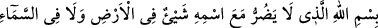
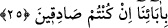

Hikaye edildiğine göre Haccâc kendi yandaşlarından Abdullah es-Sakafî’yi Enes b.
Mâlik Hazretlerine gönderip huzura çağırdı. Abdullah gelip Enes’e, “müminlerin
emirine icabet et” dedi. Enes, Allah onu zelil ve hakir etsin. Aziz insan, Allah’a tâatle
izzet kazanır. Zelil de Allah’a isyanla zillete düşer” diye bedduâ edip sonra da kalkıp
emirin huzuruna geldi. Haccâc, “sen bize bedduâ ediyorsun öyle mi?” dedi. Enes (r.a.),
“evet” diye cevap verdi. Haccâc, “neden?” dedi. Enes (r.a.) Haccac’a: “Çünkü sen
Rabbine âsî olup peygamberin sünnetine muhalefet ediyorsun. Allah düşmanlarını aziz,
Allah dostlarını da zelil ediyorsun” dedi. Haccâc, “seni feci şekilde öldürtürüm” dedi.
Enes (r.a.), “bunu yapabileceğini bilsem sana tapardım” dedi. Haccâc, “bu nasıl
oluyor?” deyince Enes (r.a.) şöyle dedi: “Çünkü Rasûlullah (s.a.) bana bir duâ öğretti.
Kim bu duâyı her sabah okursa ona hiç kimse muktedir olamaz. Yâni o kimseye zehir,
sihir ve zalim sultan musallat olamaz” buyurdu. “Ben sabahleyin bu duâyı okudum”
dedi. Haccâc, “bu duâyı bana öğret” dedi. Enes (r.a.), “Allah korusun! Bunu sana asla
öğretmem” dedi. Haccâc, “bırakın bunu gitsin” dedi.
Haccâc’a, “bunu nasıl bıraktın” dediler. Haccâc, “onun omuzlarında ağzını açmış iki
büyük aslan gördüm” dedi. Bu durum delâlet etti ki, gerçek tesir kâdir-i mutlak olan
Allah’ın elinde olup sultan ve vezirin elinde değildir. Bu işi sultanlara isnad etme işi
hakikatten perdelenip esbâb ve vesileye takılanların vehim ve hayalleridir. Sonra Enes
(r.a.) vefatı yaklaşınca hizmetçisine, “senin bende çok hizmet hakkın var” diyerek bu
duâyı ona öğretti. Duâ şudur:
“Rahman ve rahim olan Allah’ın adıyla. İsimlerin en hayırlısı olan Allah’ın
ismiyle, o Allah’ın ismi ki O’nun ismiyle yerde ve gökte hiçbir şey zarar veremez.”
Enes b. Mâlik (r.a.), Peygamberimiz (s.a.)’in hizmetçilerinden olup Peygamberimiz’e
on sene hizmet etmiştir. Hz. Ömer devrinde Basra’ya göçmüştür. Basra’da en son vefat
eden sahabîdir. Hicri 91 de 103 yaşında vefat etmiş olup kendisi “muksirûn” denilen
binden fazla hadis rivâyet eden meşhur sahabeden biridir.
25. Onlara açıkça âyetlerimiz okunduğu zaman: Doğru sözlü iseniz atalarımızı